07.3 더 큰 문제를 향해
그림 07-7-1 좁은 2칸의 방을 벗어나 3x4 격자 숲속으로 모험 영역을 확장하는 지니, 도로시, 토토
이제 도로시와 토토는 지니가 건네준 큰 지도와 함께, 기존의 좁디좁은 2칸짜리 방을 떠나 3x4 격자의 더 넓은 그리드 월드 숲속으로 모험을 확장합니다. 반복적 정책 평가 알고리즘이라는 새로운 마법을 가방에 넣고 가벼운 발걸음으로 더 복잡한 세계를 정복하러 출발해볼까요?
반복적 정책 평가 알고리즘을 이용하면 상태와 행동 패턴의 수가 어느 정도 많아져도 빠르게 풀 수 있습니다.
07.3.1 좀더 큰 과제
이전에는 두 칸짜리 그리드 월드로 문제를 살펴 보았습니다. 이번에는 좀 더 큰 문제로 반복정책 알고리즘을 알아보고자 합니다.
07.3.1.1 3x4 그리드 월드
이번에 준비한 문제는 ‘3 × 4 그리드 월드’입니다. 2칸 그리드 보다는 복잡하지만, 여전히 아직까지는 간단한 문제입니다.
[그림 07-8] 3 × 4 그리드 월드
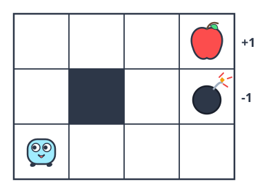
07.3.1.2 ‘3 × 4 그리드 월드’의 문제 설정은 다음과 같습니다.
• 에이전트는 상/하/좌/우 네 방향으로 이동할 수 있다. • [그림 07-8]에서 회색 칸은 벽을 뜻하며 벽 안으로는 들어갈 수 없다. • 그리드 바깥도 벽으로 둘러싸여 더 이상 나아갈 수 없다. • 벽에 부딪히면 보상은 0이다. • 사과는 보상 +1, 폭탄은 보상 -1, 그 외의 보상은 0이다. • 환경의 상태 전이는 고유하다(결정적). 즉, 에이전트가 오른쪽으로 이동하는 행동을 선택하면 (벽만 없다면) 반드시 오른쪽으로 이동한다. • 이번 문제는 일회성 과제로서, 사과를 얻으면 종료한다.
07.3.2 GridWorld 클래스 구현
‘3 × 4 그리드 월드’를 파이썬 코드를 이용하여 풀어 보도록 하겠습니다. 먼저, GridWorld 클래스로 구현해 봅니다.
NOTE_ 그리드 월드는 앞으로 자주 등장하므로 코드 입니다.
common폴더에 생성합니다.
step1. 초기화 코드
파이썬 클래스를 한번에 만드는 것보다, 단계별로 코드를 작성하도록 합니다. 우선 클래스의 초기화 부분의 코드만 작성합니다.
import numpy as np
class GridWorld:
def __init__(self):
self.action_space = [0, 1, 2, 3] # 행동 공간(가능한 행동들)
self.action_meaning = { # 행동의 의미
0: 'UP',
1: 'DOWN',
2: 'LEFT',
3: 'RIGHT',
}
self.reward_map = np.array( # 보상 맵(각 좌표의 보상값)
[[0, 0, 0, 1.0],
[0, None, 0, -1.0],
[0, 0, 0, 0]]
)
self.goal_state = (0, 3) # 목표 상태(좌표)
self.wall_state = (1, 1) # 벽 상태(좌표)
self.start_state = (2, 0) # 시작 상태(좌표)
self.agent_state = self.start_state # 에이전트 초기 상태(좌표)
파이썬 클래스에서 초기화 코드는 __init__메소드 안에 작성합니다. GridWorld 클래스를 살펴보면 여러 인스턴스 변수를 사용한 흔적을 볼 수 있습니다.
step2 코드설명
먼저 코드 첫줄에 있는 self.action_space 변수는 행동 공간 변수로 할당하였습니다.
즉 ‘가능한 행동들’을 나타냅니다.
이 코드에서 행동은 [0, 1, 2, 3]이라는 네 가지 숫자로 표현되며 각 숫자의 의미는 self.action_meaning에 정의되어 있습니다.
[!NOTE] 왜 행동을 숫자로 정의하고 다시 의미를 부여하는 단계를 거칠까요?
- 컴퓨터와 인공지능의 계산 효율성: 신경망이나 가치 표 연산(수학적 연산)을 수행할 때는 문자열(‘UP’, ‘DOWN’)보다 정수 인덱스(
0,1,2,3)를 사용하는 것이 행렬 인덱싱 및 계산 속도 면에서 압도적으로 효율적입니다.- 개발자(사람)의 가독성: 반면 코드를 디버깅하거나 렌더링 시각화를 진행할 때는 단순 정수보다 텍스트 이름이 훨씬 직관적입니다.
따라서 컴퓨터의 고속 연산(정수 인덱스)과 사람의 코드 이해도(의미 테이블)를 모두 만족시키기 위해 이와 같은 2단계 매핑 구조를 사용합니다.
예를 들어 0은 위(UP), 1은 아래(DOWN)로 이동을 뜻합니다.
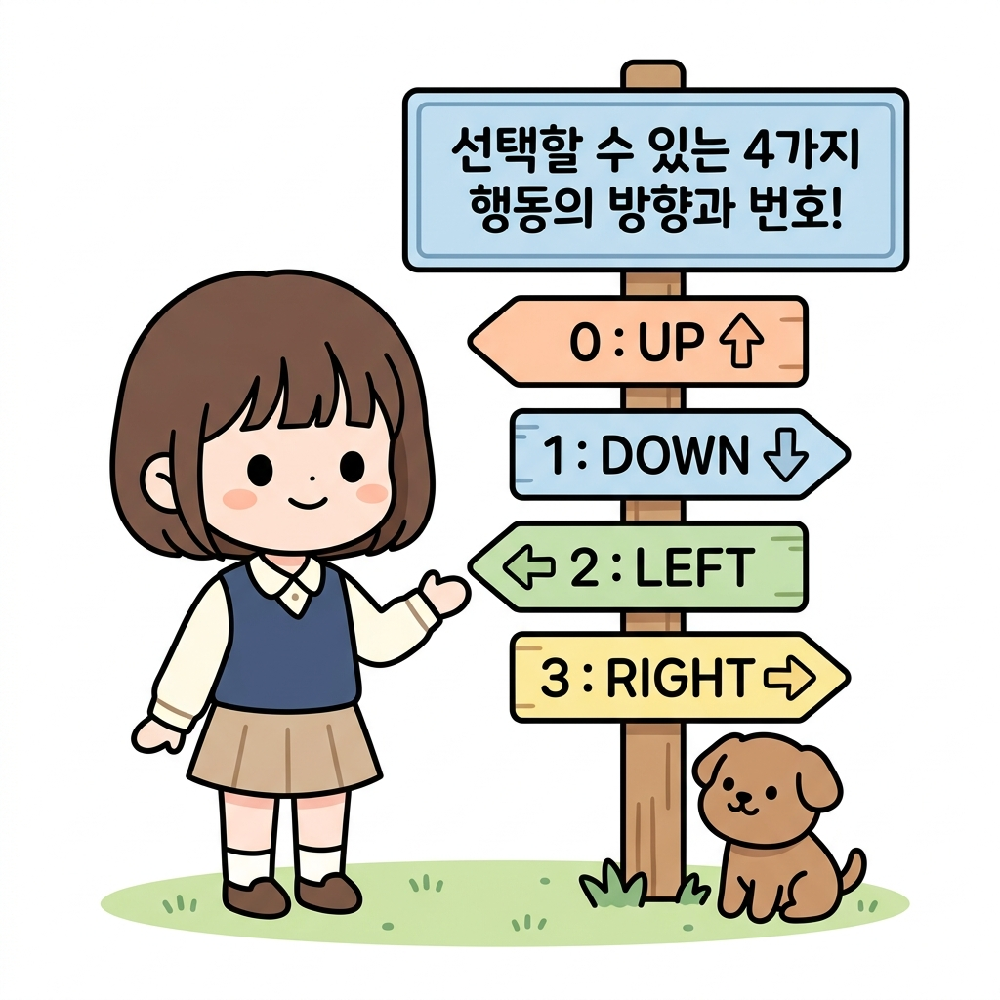
step3 보상맵
self.reward_map은 보상 맵입니다. 보상 맵은 각 좌표로 이동했을 때 얻는 보상의 크기를 담고 있습니다.
앞에서 선언한 3 × 4 그리드 월드를 2차원 배열로 선언을 한것입니다.
보상 맵은 넘파이의 2차원 배열(np.ndarray)로 만들었으므로 좌표계는 [그림 07-9]와 같습니다.
그림 07-9 보상 맵의 좌표계
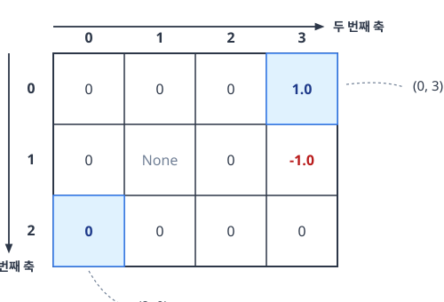
step4 일회성 과제
07.2.1.3 에서 그리드에 대한 문제를 정의할때 언급했듯이 이 문제는 일회성 과제로 제한 하였습니다. 이는 에이전트가 목표 상태에 도달하면 문제가 끝이 난다는 뜻입니다.
이렇게 문제를 일회성 과제(Episodic Task)로 제한한 이유는 다음과 같습니다.
[!NOTE] 왜 문제를 ‘일회성 과제’로 제한하여 설계할까요?
- 수학적 가치 수렴의 보장: 에이전트가 목표 지점(사과/폭탄)에 도착하면 모든 모험이 끝나고 추가 보상이 발생하지 않으므로, 미래 보상의 누적 합계가 무한대로 발산하지 않고 명확하게 하나의 값으로 수렴합니다.
- 알고리즘 경계 조건의 단순화: 목표 지점에 도달한 순간의 상태 가치 함수는 무조건 0으로 고정(
V[goal_state] = 0)되므로, 정책 평가 알고리즘을 구현할 때 가치를 갱신해 줄 명확한 기준점(경계 조건) 역할을 합니다.- 학습 루프의 종결성: 에피소드가 유한한 단계 안에서 끝나기 때문에 컴퓨터 시뮬레이션을 통해 경험을 수집하고 학습을 진행하는 과정이 단순하고 안정적입니다.
step5 목표
3x4 그리드에서 도착해야 하는 위치의 목표 상태는 (0, 3)입니다. 코드에서 self.goal_state = (0, 3) 으로 설정을 했습니다.
또한 중심에 있는 벽은 self.wall_state = (1, 1), 에이전트의 초기 위치는 self.agent_state = (2, 0)으로 설정을 하고 시작합니다.
07.3.2.1 메소드 추가
클래스의 초기화 설정을 하였다면, 이번에는 실제 메소드 들을 추가해 보도록 합니다.
다음과 같이 계속 이어서 GridWorld 클래스의 메서드들을 작성해 보겠습니다.
class GridWorld:
...
@property
def height(self):
return len(self.reward_map)
@property
def width(self):
return len(self.reward_map[0])
@property
def shape(self):
return self.reward_map.shape
def actions(self):
return self.action_space # [0, 1, 2, 3]
def states(self):
for h in range(self.height):
for w in range(self.width):
yield (h, w)
GridWorld 클래스에 유용한 인스턴스 변수를 몇 가지 구현했습니다.
step6 데코레이터
코드를 살펴보면 @property 데코레이터를 사용한 것을 볼 수 있습니다.
@property 데코레이터를 메서드 이름의 윗줄에 배치하면 해당 메서드를 인스턴스 변수로 사용할 수 있습니다.
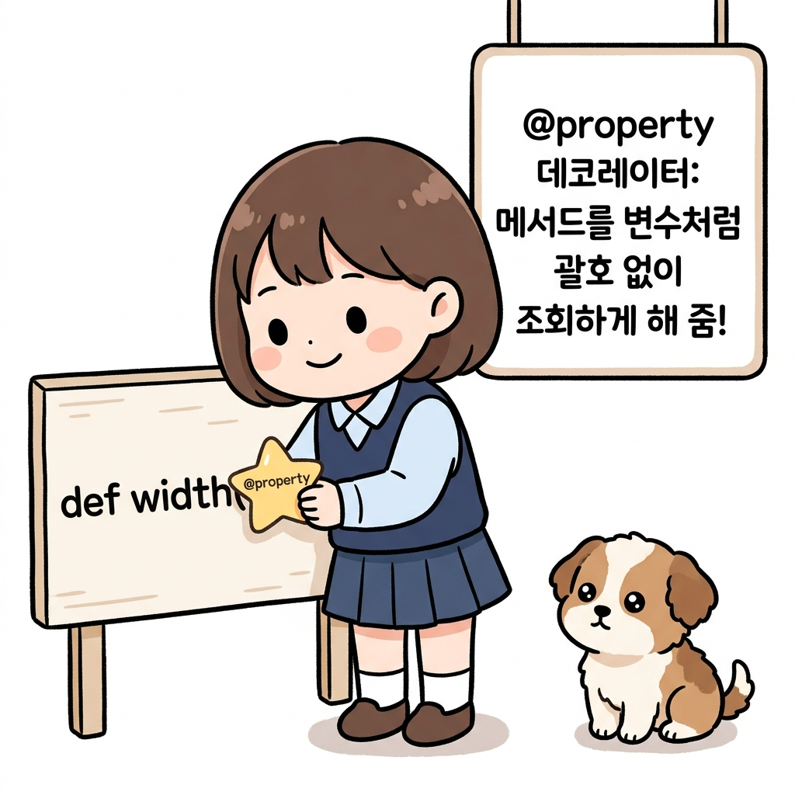
데코레이터를 선언한 메소드를 다음과 같이 사용해 볼 수 있는 예시 입니다. 메소드 호출이 아닌 변수처럼 호출하여 그리드 월드의 크기와 형상을 알아낼 수 있게 출력 합니다.
env = GridWorld()
# env.height() 대신 env.height로 사용 가능
print(env.height) # [출력 결과] 3
print(env.width) # [출력 결과] 4
print(env.shape) # [출력 결과] (3, 4)
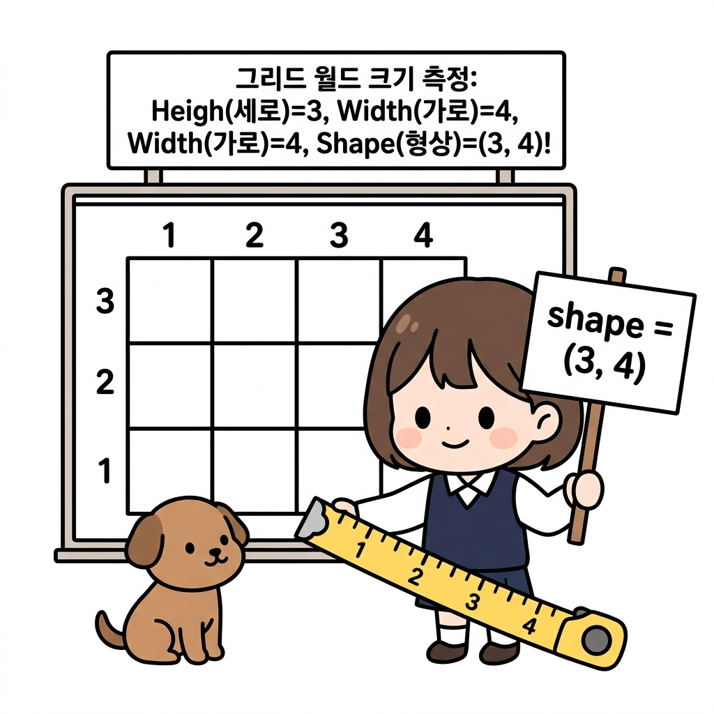
env.height와 env.width는 2차원 배열 보상 맵(self.reward_map)의 0번 축과 1번 축 크기를 계산하여 각각 그리드 월드의 세로 높이(3)와 가로 너비(4)를 반환합니다.
env.shape는 두 값을 모아 튜플 형태 (3, 4)로 한 번에 제공합니다.
데코레이터 덕분에 소괄호 () 호출 없이 변수 조회를 하는 기분으로 직관적인 코딩이 가능합니다.
step7 actions() , states()
코드에서 actions()와 states()라는 메서드도 작성을 했습니다.
이 메서드의 역할은 모든 행동과 모든 상태에 순차적으로 접근할 수 있도록 합니다.
다음 코드처럼 사용하면 됩니다.
for action in env.actions(): # 모든 행동에 순차적으로 접근
print(action)
print('===')
for state in env.states(): # 모든 상태에 순차적으로 접근
print(state)
출력 결과
0
1
2
3
===
(0, 0)
(0, 1)
...
(2, 3)
이와 같이 for문을 사용하여 모든 행동과 모든 상태에 간편하게 접근할 수 있습니다.
NOTE_
states()메서드에서는yield를 사용했습니다.
yield는return과 마찬가지로 함수의 값을 반환하지만, 함수의 실행을 잠시 멈추고 다른 일을 처리할 기회를 준다는 점에서 차이가 있습니다. 다른 일이 끝나면 멈췄던 부분부터 함수 처리를 다시 시작합니다.이 기능 덕분에 앞의 코드처럼
for문과 같은 반복 처리와 함께 사용할 수 있습니다.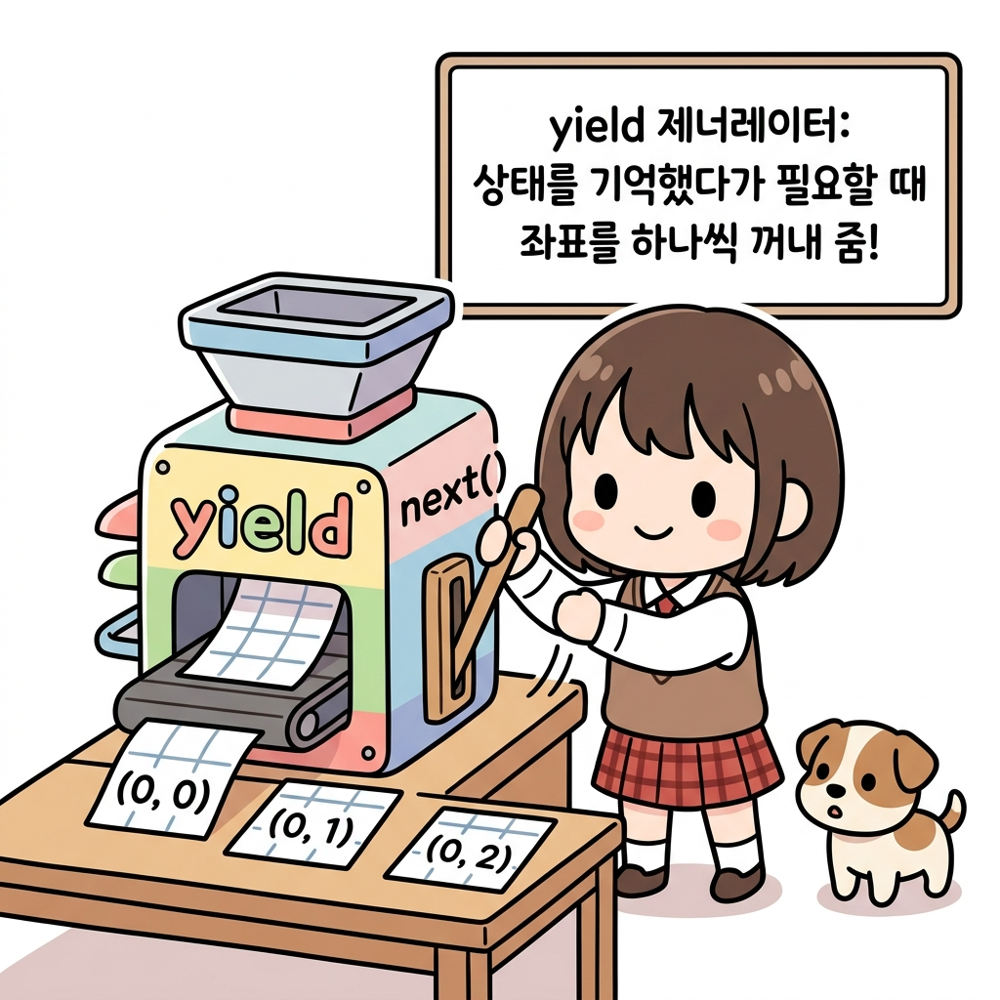
step8 next_state()
다음으로 환경의 상태 전이를 나타내는 메서드인 next_state()를 구현합니다.
class GridWorld:
...
def next_state(self, state, action):
# ❶ 이동 위치 계산
action_move_map = [(-1, 0), (1, 0), (0, -1), (0, 1)]
move = action_move_map[action]
next_state = (state[0] + move[0], state[1] + move[1])
ny, nx = next_state
# ❷ 이동한 위치가 그리드 월드의 테두리 밖이나 벽인가?
if nx < 0 or nx >= self.width or ny < 0 or ny >= self.height:
next_state = state
elif next_state == self.wall_state:
next_state = state
return next_state # ❸ 다음 상태 반환
❶에서는 벽이나 그리드 월드의 테두리는 무시하고 이동 위치(다음 상태)를 계산합니다.
[!NOTE] action_move_map의 구성과 좌표 연산 동작 원리
- 인덱스 매핑: 리스트 내 원소의 순서는 우리가 앞서 정의한 행동 공간
[0, 1, 2, 3]즉[위(UP), 아래(DOWN), 왼쪽(LEFT), 오른쪽(RIGHT)]순서와 1대1 매칭됩니다.
0: (-1, 0)→ 위(UP)로 1칸 이동 (y좌표를 1 감소)1: (1, 0)→ 아래(DOWN)로 1칸 이동 (y좌표를 1 증가)2: (0, -1)→ 왼쪽(LEFT)으로 1칸 이동 (x좌표를 1 감소)3: (0, 1)→ 오른쪽(RIGHT)으로 1칸 이동 (x좌표를 1 증가)- 좌표 변화 동작: 현재 에이전트의 좌표
state = (y, x)에 해당 행동이 나타내는 변화량move = (dy, dx)를 더하여next_state = (y + dy, x + dx)라는 가상의 다음 상태를 도출합니다. 행렬 인덱스 좌표계(맨 위가 0행)를 사용하기 때문에 위로 가는 동작이-1이 됨에 유의합시다.
그런 다음 ❷에서 테두리 밖이나 벽으로 이동하지 않았는지 확인하여, 이동이 불가능하다면 현재 위치를 유지합니다(next_state = state).
[!NOTE] 테두리 경계 및 벽 충돌 예외 처리의 동작 원리
- 격자 테두리 이탈 방지 (
nx < 0 or nx >= self.width or ny < 0 or ny >= self.height):
- 계산된 임시 좌표가 가로(0~3) 및 세로(0~2) 격자 밖으로 나가면 테두리를 뚫고 나간 비정상 행동으로 간주하여
next_state = state로 원복시킵니다.- 장애물 충돌 감지 (
next_state == self.wall_state):
- 이동 경로에 벽(회색 칸,
(1, 1))이 있다면, 벽 안으로 들어가지 못하게 막아 에이전트의 상태를 직전 상태인state로 복귀시킵니다.- 물리적 비유: 에이전트가 격자 벽면에 머리를 쿵 부딪히거나 외곽 낭떠러지를 만나 앞으로 더 나아가지 못하고 그 자리에 멈춰 서 있는 모습을 구현한 안전망 로직입니다.
또한 지금 문제에서는 상태 전이가 결정적이기 때문에 ❸에서 다음 상태를 반환합니다.
[!NOTE] 결정적 상태 전이(Deterministic Transition)와 단일 반환의 의미
- 결정적 제약 조건의 이점: 07.2.1.2의 설정 규칙에서 “에이전트가 선택한 행동의 결과는 고유하다”라고 환경을 제한했습니다. 예를 들어 ‘오른쪽’을 고르면 에이전트는 미끄러짐 없이 반드시 오른쪽 좌표로만 정직하게 이동합니다.
- 코드 동작과의 연동: 일반적인 확률적(Stochastic) 강화학습에서는 다음 상태 후보들의 확률 분포(
next_states_probs)를 딕셔너리로 조밀하게 계산해야 합니다. 하지만 여기서는 결과가 100% 확실하므로 단 하나의 정해진 다음 상태 좌표(next_state)만을 곧바로 단일return하여 코드가 파격적으로 단순해집니다.
위 그림처럼 에이전트가 맵 바깥이나 막혀 있는 회색 벽 칸(1, 1)으로 진입하려고 하면 쿵 부딪혀 제자리(next_state = state)에 멈춰 서게 됩니다.
Step9 reward()
이번에는 보상 함수 메서드인 reward()를 구현해봅시다.
class GridWorld:
...
def reward(self, state, action, next_state):
return self.reward_map[next_state]
보상 함수 메서드인 reward(self, state, action, next_state)는 수식 r(s, a, s’)의 인수에 대응하는 매개변수들을 받습니다.
하지만 이번 문제에서는 ‘다음 상태’만으로 보상값을 결정합니다.
[!NOTE] reward() 메서드의 설계 원리와 좌표 기반 인덱싱
- 인수와 수식의 일치성: 메서드의 시그니처
reward(self, state, action, next_state)는 강화학습의 수학적 정의인 보상 함수 r(s, a, s’)를 정직하게 반영하여 현재 상태(s), 행동(a), 다음 상태(s’)를 모두 전달받도록 선언했습니다.- 상태 기반 보상 결정: 하지만 본 3x4 격자 공간에서는 행동(a)의 종류나 시작 상태(s)와 무관하게, 에이전트가 최종 도착한 다음 상태(s’)에 사과(+1)가 있거나 폭탄(-1)이 있는지 여부만으로 보상이 결정됩니다.
- 배열 매핑 동작: 따라서 내부 구현에서는 복잡한 분기 조건문 대신, 미리 설정해 둔 2차원 Numpy 배열 보상 지도
self.reward_map에 다음 상태의 튜플 좌표(next_state)를 인덱스로 삼아 즉각 보상 크기를 딕셔너리처럼 빠르게 조회하여 리턴합니다.
step10 시각화 메서드
이외에도 GridWorld 클래스에는 시각화용 메서드인 render_v(self, v=None, policy=None)도 있습니다. 시각화는 지금 주제가 아니므로 책에서는 사용법만 보여드리겠습니다.
다음과 같이 호출하면 [그림 07-10]과 같은 그리드 월드가 출력됩니다.
env = GridWorld()
env.render_v()
그림 07-10 3×4 그리드 월드 시각화
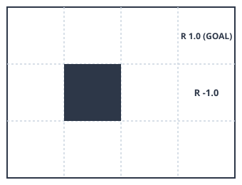
벽은 회색으로 칠해져 있습니다. 각 칸의 왼쪽 아래에는 보상값이 적혀 있습니다. 다만 보상이 0이면 아무런 값도 출력하지 않습니다.
step11
이 render_v() 메서드는 상태 가치 함수를 매개변수로 받을 수 있습니다.
시험 삼아 더미 상태 가치 함수를 주고 그려보겠습니다.
env = GridWorld()
V = {}
for state in env.states():
V[state] = np.random.randn() # 더미 상태 가치 함수
env.render_v(V)
그림 07-11 3×4 그리드 월드 시각화(상태 가치 함수 입력)
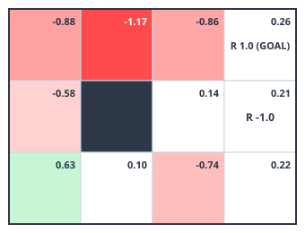
이처럼 render_v() 메서드에 가치 함수를 건네면 각 위치의 가치 함수 값이 해당 칸 오른쪽 위에 표시됩니다.
그리고 값의 크기에 따라 색을 달리 하여 그리드 월드를 히트맵 형태로 그려줍니다.
값이 작을수록 붉은색이 짙어지고 클수록 녹색이 짙어집니다.
NOTE_
render_v()메서드는 정책도 받을 수 있습니다.정책을 건네면 각 위치에서 취할 가능성이 가장 큰 행동을 화살표### 07.2.5 무작위 정책 평가 결과
이제 지금까지 구현한 GridWorld 클래스와 policy_eval() 함수를 사용하여 정책 평가를 수행해봅시다.
env = GridWorld()
gamma = 0.9 # 할인율
pi = defaultdict(lambda: {0: 0.25, 1: 0.25, 2: 0.25, 3: 0.25}) # 정책
V = defaultdict(lambda: 0) # 가치 함수
V = policy_eval(pi, V, env, gamma) # 정책 평가
env.render_v(V, pi) # 시각화
무작위 정책을 pi, 가치 함수를 V로 초기화했습니다. 그리고 무작위 정책을 평가하여 가치 함수를 구합니다. 이 코드를 실행하면 다음 그림을 얻을 수 있습니다.
그림 07-13 무작위 정책의 가치 함수
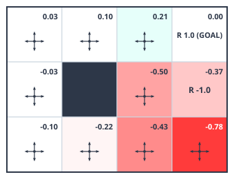
[그림 07-13]은 무작위 정책의 가치 함수를 보여줍니다. 예를 들어 시작점인 왼쪽 맨 아래 칸의 가치 함수는 -0.10입니다. 시작점에서 무작위로 움직이면 기대 수익이 -0.10이라는 뜻입니다. 에이전트가 무작위로 움직이기 때문에 폭탄을 (의도치 않게) 얻을 수도 있습니다. 값이 -0.10인 걸 보니 사과(+1)보다 폭탄(-1)을 얻을 확률이 조금 더 큽니다. 또한 맨 아래 줄과 가운데 줄은 모두 마이너스인데, 이 위치들에서는 폭탄의 영향이 더 크다는 뜻입니다.
앞의 코드를 실행하면 결과가 순식간에 나옵니다. DP를 적용하여 정책 평가의 실행 효율을 높였기 때문입니다. 그 덕분에 그리드 월드의 크기가 (어느 정도) 커져도 괜찮습니다. 하지만 아직까지는 정책 평가만을 수행했을 뿐입니다. 다음 절에서는 최적 정책을 찾는 방법을 알아보겠습니다.
[!NOTE] policy_eval()의 핵심 수렴 루프 메커니즘
- 갱신 반복 (
while True): 가치 함수의 상태 값이 수렴하여 변화가 거의 없어질 때까지eval_onestep을 반복 가동합니다.- 최대 변화량 추적 (
delta): 갱신되기 직전 가치 표(old_V)와 갱신된 가치 표(V)의 각 상태별 절댓값 차이(abs(V[state] - old_V[state]))를 구한 뒤, 그중 가장 큰 변화 폭을delta에 기록합니다.- 임계값 중단 검사 (
threshold):delta가 우리가 설정한 아주 미세한 오차 범위 임계값(threshold = 0.001)보다 작아지면, 더 이상의 반복 계산이 무의미할 정도로 수렴했다고 판정하여 무한 루프를 탈출(break)하고 가치 함수 표를 최종 반환합니다.�� 구현했습니다. 딕셔너리는V[key]형태로 사용하는데, 딕셔너리 안에 key가 존재하지 않으면 오류가 납니다.
따라서 앞의 코드처럼 우선 모든 원소를 초기화해야 합니다.
[!NOTE] 일반 딕셔너리의 한계(KeyError)
- 일반 딕셔너리의 문제점: 빈 딕셔너리(
V = {})에 존재하지 않는 상태 좌표 키((1, 2))를 건네면 파이썬은KeyError를 발생시키며 즉시 멈춥니다. 이를 막으려면 모든 상태 좌표를 미리 루프를 돌며 초기값0으로 일일이 집어넣는 사전 등록 작업(for state in env.states(): V[state] = 0)을 거쳐야 해서 코드가 번잡해집니다.
step14 defaultdict의 마법
이 초기화의 번거로움을 덜어주는 것이 파이썬 표준 라이브러리의 defaultdict입니다.
사용법은 다음과 코드를 변경해도 동일 합니다.
from collections import defaultdict # defaultdict 임포트
from common.gridworld import GridWorld
env = GridWorld()
V = defaultdict(lambda: 0)
state = (1, 2)
print(V[state]) # [출력 결과] 0
이와 같이 defaultdict(lambda: 0)으로 생성한 V는 일반 딕셔너리처럼 사용할 수 있습니다.
[!NOTE] defaultdict의 마법
- defaultdict의 동작 원리:
defaultdict(lambda: 0)은 없는 키로 가치 조회를 하더라도 오류를 내뿜지 않습니다. 대신 지정된 람다 함수(lambda: 0)를 동적으로 구동하여 키에 기본값0을 자동 부여해 즉시 딕셔너리에 새 원소로 보강 등록해 줍니다.- 결과: 이 덕분에 수많은 상태를 미리 돌며 가치 함수를
0으로 대량 초기화해 두는 귀찮은 준비 코드를 단 한 줄도 쓰지 않고 생략할 수 있게 됩니다.
만약 딕셔너리에 존재하지 않는 키를 건네면 (주어진 키, 기본값) 형태의 원소를 새로 만들어 넣습니다. 기본값은 딕셔너리를 생성할 때 설정한 값입니다.
지금 예에서는 V[state] 코드가 실행되는 시점에는 state를 키로 하는 원소가 없습니다.
그래도 오류를 내지 않고 값이 0인 원소를 자동으로 만들어줍니다.
NOTE_
defaultdict의 기본값을 설정하는 방법은 여러 가지가 있지만lambda를 사용하는 방식이 가장 간단합니다. 예를 들어defaultdict(lambda: 0)이나defaultdict(lambda: "A")형태로 작성합니다.
step15
이제부터는 가치 함수 구현에 defaultdict를 사용하겠습니다. 정책 역시 defaultdict로 구현합니다.
그럼 무작위 정책을 defaultdict를 사용하여 구현해보겠습니다. ‘3 × 4 그리드 월드’ 문제에서 에이전트가 취할 수 있는 행동은 네 개이며, 각 행동은 [0, 1, 2, 3]으로 표현됩니다. 이 네 개의 행동이 균일하게 무작위로 선택된다면 각 행동이 수행될 확률은 모두 0.25입니다. 행동의 확률 분포는 {0: 0.25, 1: 0.25, 2: 0.25, 3: 0.25}로 나타낼 수 있습니다.
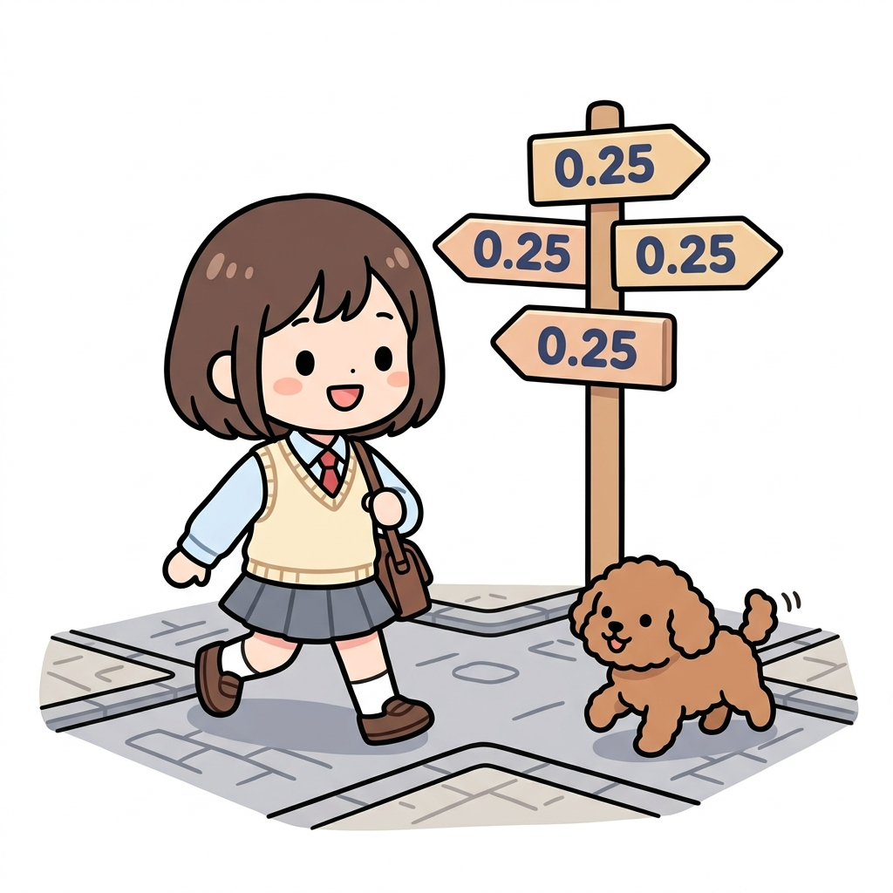
[!NOTE] 무작위 정책의 개념과 초기 이정표 비유
- 균등 확률 분포: 에이전트가 격자 판 위의 어떤 상태에 있든 특정 행동(방향)을 편애하지 않고, 위/아래/왼쪽/오른쪽 네 방향으로 발걸음을 뗄 확률이 각각 4분의 1(0.25)로 완벽하게 동일합니다.
- 이정표 비유: 삽화 속 네 갈림길 사거리에 꽂힌 이정표마다 예외 없이
0.25라는 숫자가 동일하게 적혀 있어, 도로시와 토토가 고민 없이 무작위로 한 발을 디딜 준비를 하는 물리적 상황과 일치합니다.- 학습의 출발점: 아직 맵의 어디에 과일이 있고 어디에 폭탄이 있는지 알지 못하는 탐험 초기 단계이므로, 이러한 공평한 무작위 탐색(Random Exploration) 정책을 첫 디딤돌로 삼아 가치를 갱신해 나가게 됩니다.
따라서 무작위 정책은 다음과처럼 구현할 수 있습니다.
pi = defaultdict(lambda: {0: 0.25, 1: 0.25, 2: 0.25, 3: 0.25})
state = (0, 1)
print(pi[state]) # [출력 결과] {0: 0.25, 1: 0.25, 2: 0.25, 3: 0.25}
[!NOTE] 정책 객체
pi의 데이터 타입과 실제 저장되는 값의 구조
pi객체 자체의 데이터 타입:
- 파이썬 표준 라이브러리의
collections.defaultdict클래스입니다.pi[state]반환값의 데이터 타입:
- 표준 딕셔너리(
dict) 타입입니다.pi내부에 축적되는 데이터 구조:
- 키 (Key): 상태를 나타내는 2차원 좌표 튜플
(y, x)(예:(0, 1))- 값 (Value): 각 행동 인덱스와 그 행동을 선택할 확률을 매핑한 사전
{행동_인덱스: 선택_확률}(예:{0: 0.25, 1: 0.25, 2: 0.25, 3: 0.25})즉,
pi[state]를 호출하여 값을 조회하는 순간, 해당 상태 좌표가 키로 등록되고 그 가치 분포 사전이 매핑되어pi객체의 내부 사전 메모리에 다음과 같은 구조로 자동 저장·누적됩니다.{(0, 1): {0: 0.25, 1: 0.25, 2: 0.25, 3: 0.25}}
무작위 정책을 pi로 구현했습니다.
pi는 상태가 주어지면 해당 상태에서 취할 수 있는 행동의 확률 분포를 반환합니다. 지금 예에서는 상태 (0, 1)에서의 행동 확률 분포를 출력했고, 결과는 당연하게도 모든 행동이 똑같이 0.25 확률로 선택되는 분포입니다.
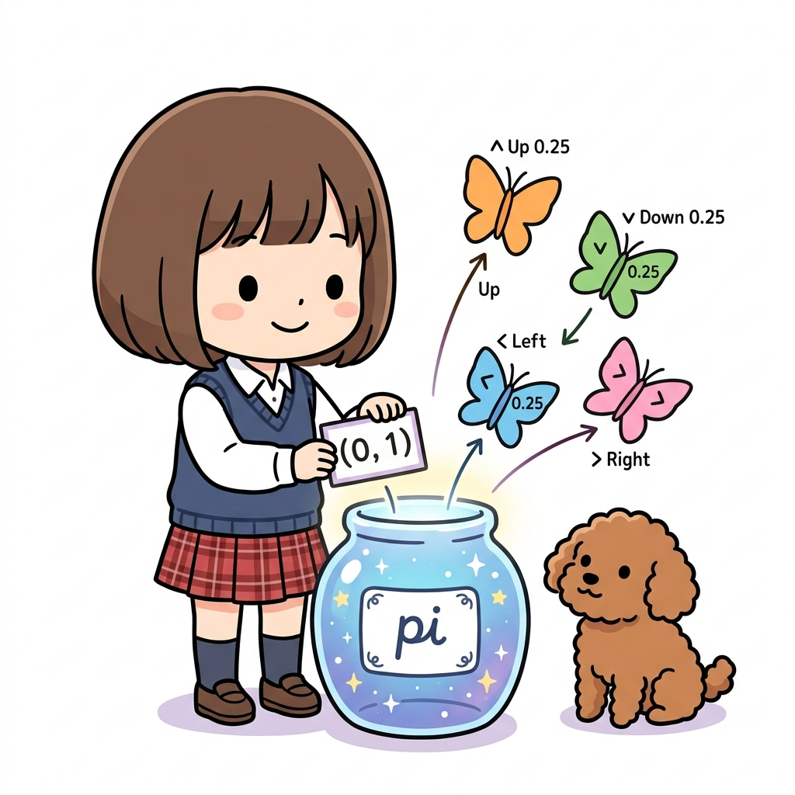
[!NOTE] defaultdict 무작위 정책의 동작 원리와 삽화 비유
- 정책
pi의 역할: 정책은 현재 에이전트의 위치(상태s)가 입력으로 주어지면, 그 자리에서 선택할 수 있는 각 행동들(UP,DOWN,LEFT,RIGHT)의 실행 확률 분포를 출력해 주는 지도 역할을 합니다.- defaultdict 매핑 마법:
pi항아리는 처음 방문하는 미지의 좌표(0, 1)카드를 건네받더라도 당황하지 않고, 우리가 미리 지정해 둔 람다 기본값{0: 0.25, 1: 0.25, 2: 0.25, 3: 0.25}을 꺼내어 돌려줍니다.- 시각적 비유: 삽화처럼 도로시가
(0, 1)상태 푯말을pi마법 항아리에 집어넣자, 네 개의 행동 방향(상/하/좌/우)을 나풀거리며 날아오르는 나비들이 각각 균등한 0.25의 확률 딱지를 붙이고 나타나는 물리적 원리와 같습니다.
07.3.4 반복적 정책 평가 구현
이제 반복적 정책 평가 알고리즘을 구현하겠습니다.
step16
우선 갱신을 한 단계만 수행하는 함수를 구현합시다.
여기서 구현할 eval_onestep() 함수는 다음과 같이 네 개의 매개변수를 받습니다.
• pi (defaultdict): 정책
• V (defaultdict): 가치 함수
• env (GridWorld): 환경
• gamma (float): 할인율
코드를 보겠습니다.
def eval_onestep(pi, V, env, gamma=0.9):
for state in env.states(): # ❶ 각 상태에 접근
if state == env.goal_state: # ❷ 목표 상태에서의 가치 함수는 항상 0
V[state] = 0
continue
action_probs = pi[state] # probs는 probabilities(확률)의 약자
new_V = 0
# ❸ 각 행동에 접근
for action, action_prob in action_probs.items():
next_state = env.next_state(state, action)
r = env.reward(state, action, next_state)
# ❹ 새로운 가치 함수
new_V += action_prob * (r + gamma * V[next_state])
V[state] = new_V
return V
eval_onestep() 함수는 for문을 이중으로 사용하고 있습니다.
바깥 for문인 ❶에서는 모든 상태를 하나씩 추적합니다. 그림으로 표현하면 다음과 같습니다.
그림 07-12 각 상태에 순차적으로 접근하기
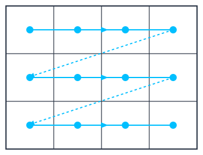
이와 같이 모든 상태에 순차적으로 접근합니다.
그리고 ❷에서 상태 state가 목표 상태이면 가치 함수를 0으로 설정합니다.
에이전트가 목표 지점에 도달하면 에피소드가 곧장 끝나고 그 다음 전개는 아무것도 없기 때문입니다. 따라서 목표 상태에서의 가치 함수 값은 항상 0입니다.
이 함수는 전체 12개 상태(바깥 for문)를 하나씩 방문하면서, 각 상태마다 가능한 4가지 방향의 행동(안쪽 for문)을 모두 짚어봅니다. 따라서 총 12 × 4 = 48가지의 경로 조합을 훑으며 가치를 갱신하게 됩니다.
step17 ❸번과 ❹번의 연산 해설
❸에서는 행동의 확률 분포를 가져옵니다.
그리고 상태 전이 함수(env.next_state(state, action))로 다음 상태(next_state)를 얻습니다. 다음은 이 정보들로 반복적 정책 평가 알고리즘의 갱신식인 [식 07-3]을 계산하면 됩니다.
코드의 ❹를 [식 07-3]과 비교해보면 대응 관계가 명확하게 보입니다. \(\begin{aligned} &s' = f(s, a) \text{ 일 때} \\ &V_{k+1}(s) = \sum_{a} \pi(a \mid s) \{ r(s, a, s') + \gamma V_k(s') \} \end{aligned} \tag{식 07-3}\)
이상의 eval_onestep() 함수로 가치 함수가 한 차례 갱신됩니다.
step18 policy_eval() 구현
이제부터는 이 갱신을 반복해야 합니다.
반복을 처리하는 함수는 다음처럼 구현할 수 있습니다.
def policy_eval(pi, V, env, gamma, threshold=0.001):
while True:
old_V = V.copy() # 갱신 전 가치 함수
V = eval_onestep(pi, V, env, gamma)
# 갱신된 양의 최댓값 계산
delta = 0
for state in V.keys():
t = abs(V[state] - old_V[state])
if delta < t:
delta = t
# 임계값과 비교
if delta < threshold:
break
return V
매개변수 threshold는 갱신 시 임계값입니다.
이 코드에서 알 수 있듯이 eval_onestep() 함수를 반복 호출하여 갱신된 양의 최댓값이 임계값보다 작아지면 갱신을 중단합니다.
이제 지금까지 구현한 GridWorld 클래스와 policy_eval() 함수를 사용하여 정책 평가를 수행해봅시다.
[!NOTE] policy_eval()의 핵심 수렴 루프 메커니즘
- 갱신 반복 (
while True): 가치 함수의 상태 값이 수렴하여 변화가 거의 없어질 때까지eval_onestep을 반복 가동합니다.- 최대 변화량 추적 (
delta): 갱신되기 직전 가치 표(old_V)와 갱신된 가치 표(V)의 각 상태별 절댓값 차이(abs(V[state] - old_V[state]))를 구한 뒤, 그중 가장 큰 변화 폭을delta에 기록합니다.- 임계값 중단 검사 (
threshold):delta가 우리가 설정한 아주 미세한 오차 범위 임계값(threshold = 0.001)보다 작아지면, 더 이상의 반복 계산이 무의미할 정도로 수렴했다고 판정하여 무한 루프를 탈출(break)하고 가치 함수 표를 최종 반환합니다.
07.3.5 무작위 정책 평가 결과
이제 지금까지 구현한 GridWorld 클래스와 policy_eval() 함수를 사용하여 정책 평가를 수행해봅시다.
env = GridWorld()
gamma = 0.9 # 할인율
pi = defaultdict(lambda: {0: 0.25, 1: 0.25, 2: 0.25, 3: 0.25}) # 정책
V = defaultdict(lambda: 0) # 가치 함수
V = policy_eval(pi, V, env, gamma) # 정책 평가
env.render_v(V, pi) # 시각화
무작위 정책을 pi, 가치 함수를 V로 초기화했습니다.
그리고 무작위 정책을 평가하여 가치 함수를 구합니다. 이 코드를 실행하면 다음 그림을 얻을 수 있습니다.
그림 07-13 무작위 정책의 가치 함수
[그림 07-13]은 무작위 정책의 가치 함수를 보여줍니다.
예를 들어 시작점인 왼쪽 맨 아래 칸의 가치 함수는 -0.10입니다. 시작점에서 무작위로 움직이면 기대 수익이 -0.10이라는 뜻입니다.
에이전트가 무작위로 움직이기 때문에 폭탄을 (의도치 않게) 얻을 수도 있습니다. 값이 -0.10인 걸 보니 사과(+1)보다 폭탄(-1)을 얻을 확률이 조금 더 큽니다.
또한 맨 아래 줄과 가운데 줄은 모두 마이너스인데, 이 위치들에서는 폭탄의 영향이 더 크다는 뜻입니다.
그림 07-14 무작위 정책에 따라 격자 세상을 헤매는 도로시와 토토
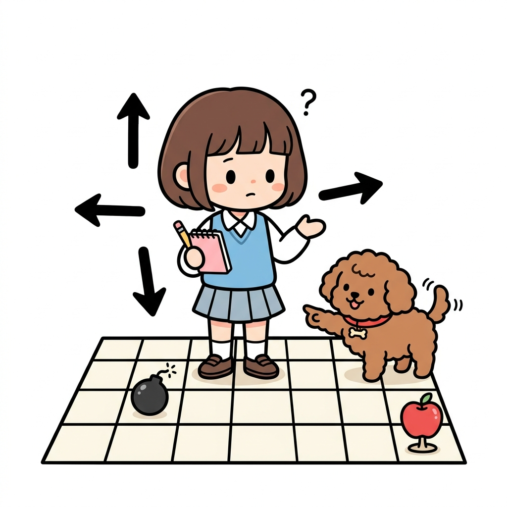
앞의 코드를 실행하면 결과가 순식간에 나옵니다. DP를 적용하여 정책 평가의 실행 효율을 높였기 때문입니다. 그 덕분에 그리드 월드의 크기가 (어느 정도) 커져도 괜찮습니다.
하지만 아직까지는 정책 평가만을 수행했을 뿐입니다.
다음 절에서는 최적 정책을 찾는 방법을 알아보겠습니다.